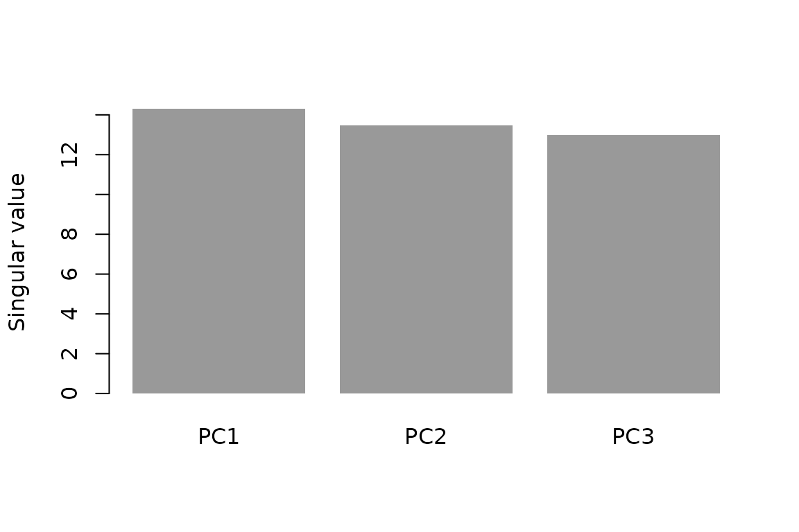
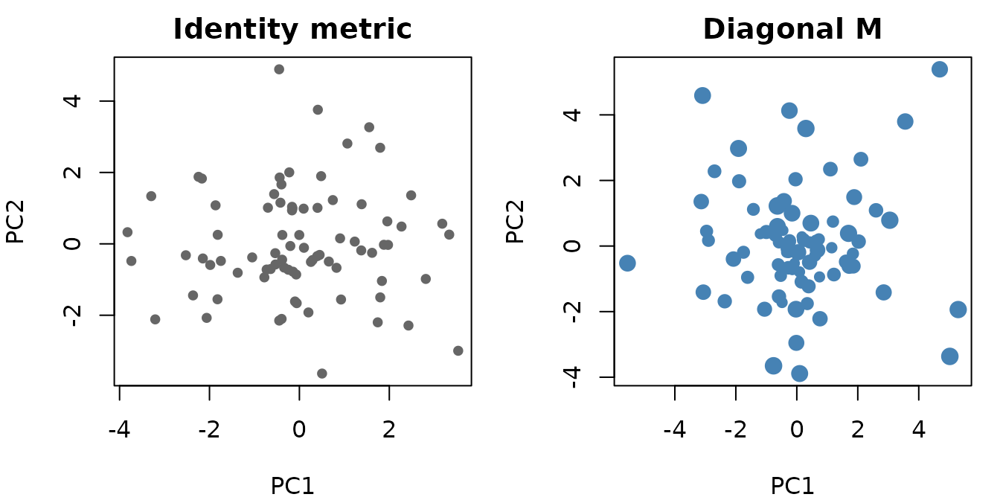
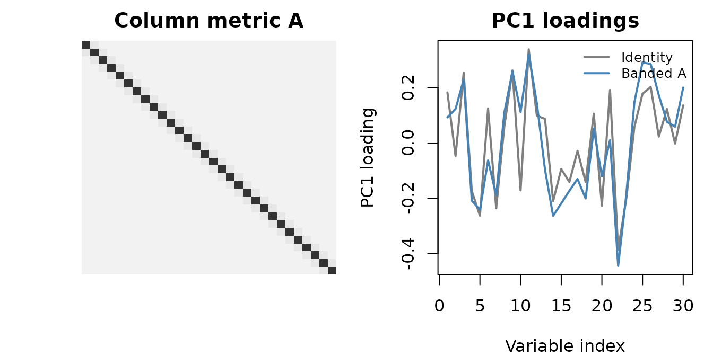
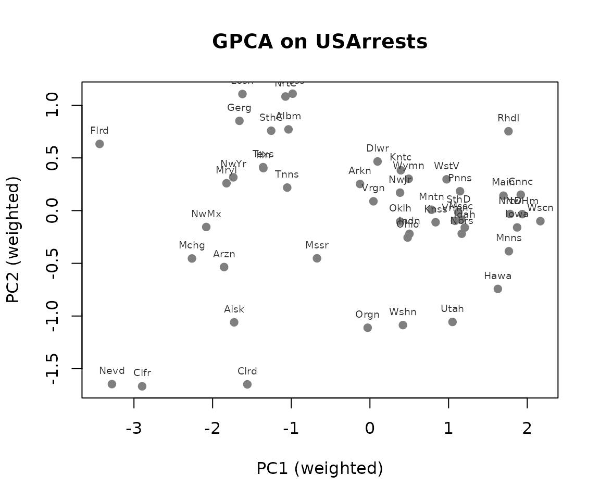

Why generalized PCA?
Standard PCA (prcomp()) treats every observation and
every variable equally. That is fine when the data are homogeneous, but
in many applications the assumption is wrong: some observations are
noisier than others, some variables are correlated by design, or there
is known spatial or temporal structure you want the decomposition to
respect. Generalized PCA encodes that prior knowledge through a row
metric M and a column metric A. When both are
identity, you recover ordinary PCA.
Quick start
set.seed(1)
X <- matrix(rnorm(80 * 30), 80, 30)
fit <- genpca(X, ncomp = 3, preproc = multivarious::center())
fit$sdev
#> [1] 14.29106 13.45933 12.99494
Singular values from the 3-component fit.
With identity metrics, genpca() reproduces standard PCA.
The interesting cases are when M or A is
non-trivial.
Row weights (diagonal metric)
A diagonal M says “weight observation i by
m_ii.” Useful when rows represent groups of different
sizes, or when some rows are more reliable than others.
row_wt <- runif(nrow(X), 0.5, 1.5)
M <- Diagonal(x = row_wt)
fit_row <- genpca(X, M = M, ncomp = 3, preproc = multivarious::center())
head(multivarious::scores(fit_row), 4)
#> PC1 PC2 PC3
#> Obs1 -0.6081369 -0.56870409 0.3255369
#> Obs2 -1.6138469 -0.95435834 -0.5040896
#> Obs3 -0.2417079 4.12986019 1.7555520
#> Obs4 1.1451390 -0.05141449 -1.3684167
Identity (left) vs row-weighted (right) component scores. Symbol size in the right panel scales with row weight.
Column structure (smoothness)
A non-identity column metric encodes prior structure on the variables. Here we add a small AR-style coupling between adjacent columns:
p <- ncol(X)
A <- Diagonal(p)
for (i in seq_len(p - 1)) {
A[i, i + 1] <- 0.15
A[i + 1, i] <- 0.15
}
A <- A + 0.05 * Diagonal(p)
fit_col <- genpca(X, A = A, ncomp = 3, preproc = multivarious::center())
fit_col$sdev
#> [1] 14.79937 14.00442 13.28632
Banded column metric A (left) and the resulting PC1 loadings, identity vs A (right). The banded A pulls adjacent loadings together, suppressing high-frequency wiggle.
Choosing the number of components
A scree plot is the quickest first look:
barplot(fit$sdev^2,
names.arg = paste0("PC", seq_along(fit$sdev)),
xlab = "Component", ylab = "Variance",
col = "grey60", border = NA)Variance explained by each component.
For a more principled choice, split the rows into train and holdout,
fit on the training set, and compare holdout reconstruction error across
values of ncomp. With informative metrics, a small
ncomp often beats a larger unweighted PCA.
Real data: USArrests
data("USArrests")
X_real <- as.matrix(USArrests[, c("Murder", "Assault", "Rape")])
pop_wt <- USArrests$UrbanPop / mean(USArrests$UrbanPop)
M_real <- Diagonal(x = pop_wt)
col_sd <- apply(X_real, 2, sd)
A_real <- Diagonal(x = 1 / col_sd^2)
fit_real <- genpca(X_real, M = M_real, A = A_real, ncomp = 2,
preproc = multivarious::center())
scores2d <- multivarious::scores(fit_real)
GPCA on USArrests with row weights from urbanisation and column weights inversely proportional to variance.
PC1 separates states by overall violent-crime rate, with high-urbanisation states pulled toward the high end through the row weights. PC2 picks up the residual contrast between assault-heavy and rape-heavy states once the dominant rate axis is removed.
Object verbs
genpca() returns a bi_projector from the
multivarious ecosystem. The verbs you reach for most:
| Verb | Returns | What it gives you |
|---|---|---|
multivarious::scores(fit) |
n x k |
Observation coordinates in component space |
multivarious::components(fit) |
p x k |
Loadings (variable directions) |
multivarious::project(fit, X_new) |
n_new x k |
Out-of-sample scores |
reconstruct(fit, ncomp = k) |
n x p |
Rank-k reconstruction of
X
|
These verbs are shared across genpca(),
genpls(), sfpca(), and rpls(), so
once you learn them on genpca they carry over.
Where next
-
vignette("gpca-metrics")covers metric recipes (AR(1), spatial kernels, graph Laplacians) and thegpca_mle()learner. -
vignette("gpca-scale")covers backends, sparse workflows, and covariance-only GPCA. -
vignette("gplssvd-reference")covers the generalized PLS / PLS-SVD interface and includes a contributor-oriented reference implementation.